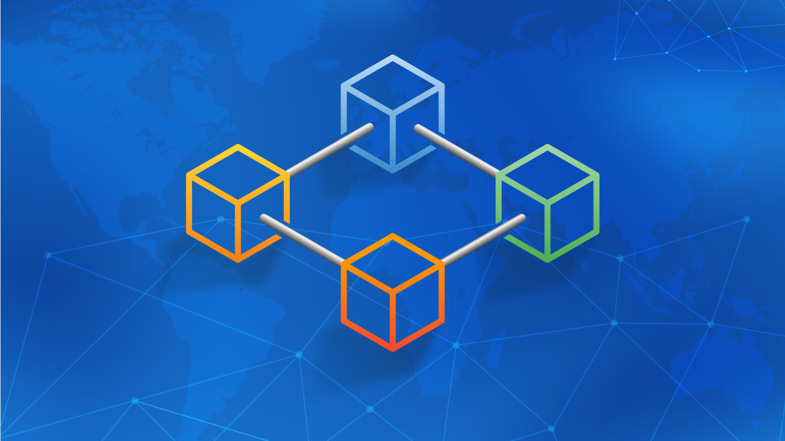

Что такое блокчейн?
|
Блокчейн — технология, которая позволяет сохранять и передавать данные в виде последовательности связанных блоков. Каждый блок содержит информацию и ссылку на предыдущий — вместе они образуют цепочку. Так данные в блокчейне защищены от изменений и фальсификации.В сети блокчейн множество участников, которые сотрудничают между собой для обработки и подтверждения операций. Каждый узел активно участвует в проверке и добавлении новых блоков с этими операциями. Основные компоненты
Роль консенсусных алгоритмовProof of Work (Доказательство работы), Proof of Stake (Доказательство доли). Преимущества блокчейна
|
 |